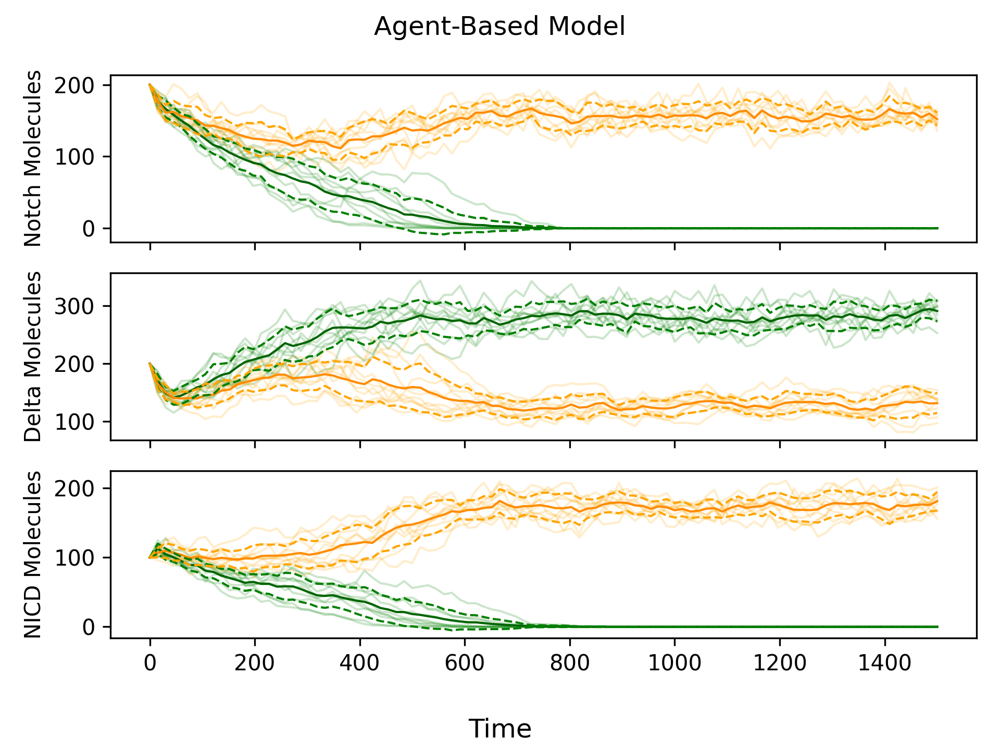
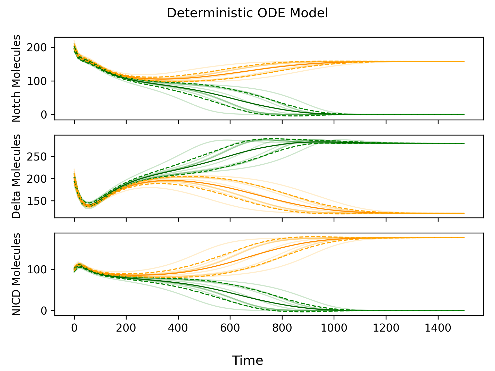
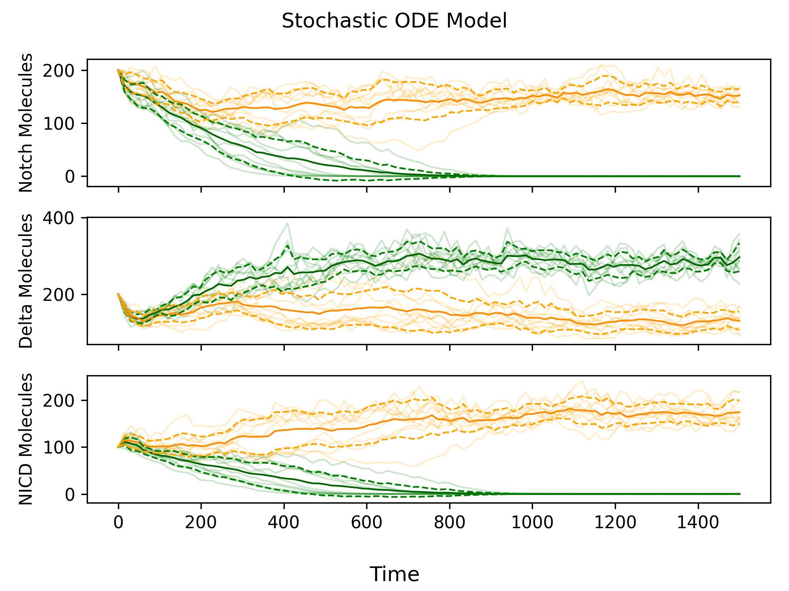
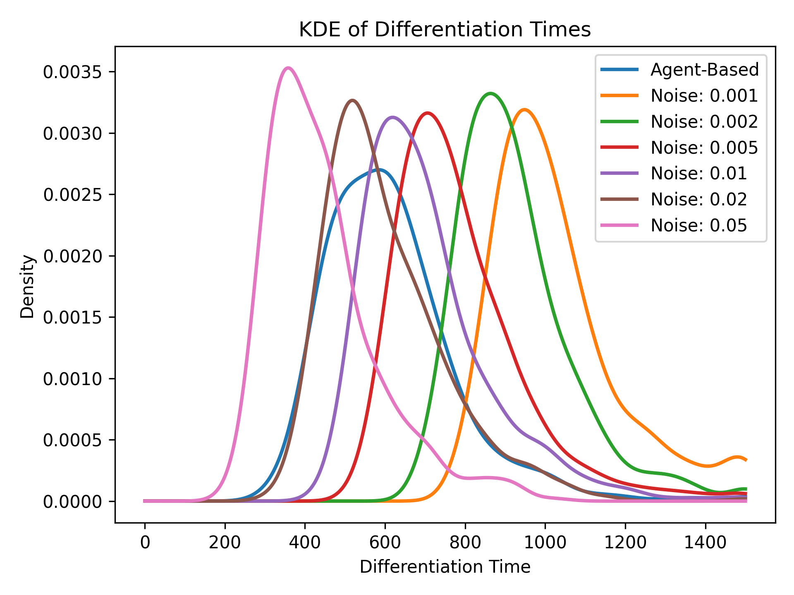

Mathematical biology is a field of study that uses mathematical models to better understand the natural world. Oftentimes, these models involve simulating the behaviour of individual molecules, cells, or organisms (agents). While highly accurate, these agent-based models can be computationally expensive. Therefore, when the number of agents becomes large, it becomes impractical to track each one individually. Instead, mathematicians use ordinary differential equations (ODEs) to describe the collective behaviour of the entire population. In this post, we’ll learn about a biological system, develop both agent-based and ODE models, and then evaluate the benefits and drawbacks of each approach. Finally, we’ll explore how adding randomness to the ODE model can bridge the gap between the computational efficiency of differential equations and the accuracy of agent-based simulations.
Delta-Notch Signalling
Interactions between Delta and Notch molecules play an important role in determining cell fate in a wide variety of plants and animals. Differences in cell fates are responsible for the emergence of patterns (i.e. the stripes of a zebra) and organ development (i.e. the formation of a heart within an embryo). Furthermore, issues with Delta-Notch signalling have been implicated in various cancers.
So how does Delta-Notch signalling work?
Notch is a receptor located on the cell membrane which can bind to a single Delta molecule. Notch receptors always bind to Delta molecules from neighbouring cells1. When a binding event occurs, a single NICD molecule is created inside the cell. Then, the Notch and Delta molecules are removed from the membrane. Within the cell, the NICD molecule does two things:
- Promotes the production of new Notch molecules.
- Inhibits the production of new Delta molecules.
Now, imagine a cell whose neighbours have a high concentration of Delta molecules. This will cause many binding events, which will create many NICD molecules within the cell. The high concentration of NICD molecules will inhibit the production of Delta molecules. Therefore, the cell will end up with a low concentration of Delta molecules, unlike its neighbours.
The opposite effect occurs in a cell whose neighbours have a low concentration of Delta molecules (i.e. the cell will end up with a high concentration of Delta molecules). This is the mechanism that allows the Delta-Notch signalling network to induce cell differentiation. We will use the following vocabulary to describe cell fates for the rest of this post:
- The primary fate occurs when a cell has high Delta and low Notch.
- The secondary fate occurs when a cell has low Delta and high Notch.
Modelling Chemical Reactions
In order to build a mathematical model of the Delta-Notch signalling network, we first need a precise understanding of the chemical reactions that take place within it. Scientists write chemical reactions using arrow notation. For instance, \(X \rightarrow Y\) means “an \(X\) is converted into a \(Y\)”. We will use the symbol \(\emptyset\) to represent the absence of molecules. For example, \(X \rightarrow \emptyset\) means “an \(X\) decays” and \(\emptyset \rightarrow X\) means “an \(X\) is produced”. Chemical reactions can also involve multiple molecules. For instance, \(X + 2Y \rightarrow W + Z\) means “an \(X\) and two \(Y\)’s are converted into a \(W\) and a \(Z\)”. All reactions also have a rate, which determines how quickly or slowly they occur2. We’ll talk more about the reaction rates in the section on modelling with ODEs.
Our model of the Delta-Notch signalling network includes six chemical reactions that can occur within a single cell. These reactions are listed in the table below, where \(N\) is a Notch receptor, \(D\) is a Delta molecule, and \(I\) is a NICD molecule.
| Reaction | Description |
|---|---|
| \(N + D_{ext} \rightarrow I\) | A Delta molecule from another cell binds to a Notch receptor, releasing a NICD molecule. |
| \(N \rightarrow \emptyset\) | A Notch receptor decays. |
| \(D \rightarrow \emptyset\) | A Delta molecule decays. |
| \(I \rightarrow \emptyset\) | A NICD molecule decays. |
| \(\emptyset \rightarrow N\) | A Notch receptor is produced. |
| \(\emptyset \rightarrow D\) | A Delta molecule is produced. |
The Agent-Based Model
As you may recall from the introduction, an agent-based model involves simulating individual entities known as agents. For the Delta-Notch signalling network, the agents are Notch, Delta, and NICD molecules, and the chemical reactions above define how they interact with each other. We will use the Gillespie algorithm to simulate interactions between agents while taking into account the inherent randomness of reactions. Here’s how the Gillespie algorithm works:
- Initialize the system by assigning Notch, Delta, and NICD molecules to each cell.
- Calculate the probability of each reaction occurring based on the reaction rates and molecule counts3. The probability of a Delta molecule binding to a Notch receptor is proportional to the product of their concentrations. This is due to the Law of Mass Action.
- Generate a random waiting time \(t_i\) before the next reaction of any type by “adding up” the probabilities determined in Step 24. Increment the current time by \(t_i\).
- Choose which reaction occurs by randomly selecting one based on its probability.
- Adjust the number of molecules based on the chosen reaction.
- Continue Steps 2-5 until a certain time limit or number of reactions is reached.
Using the Gillespie algorithm to simulate chemical reactions is very accurate, because we can determine the exact state of the system at any moment in time. However, as the number of molecules increases, the frequency of reactions increases drastically. Generating the plot shown in Figure 1, required \(\approx 100\,000\) reactions per simulation, highlighting the computational expense of agent-based modelling. And this was for a system with only two cells and \(\approx 200\) molecule of each type. For simulations involving more molecules and/or cells, using an agent-based model would not be computationally feasible.

Modelling with ODEs
An Ordinary Differential Equation (ODE) describes how some quantity (like the number of Notch molecules in a cell) changes over time. To use an ODE, the quantity we are measuring must be continuous. However, the number of molecules in a cell is discrete, so any model that uses ODEs will be an approximation of the agent-based model. Chemistry doesn’t deal in halves – there can never be \(120.43\) Notch molecules in a cell. But if we simply round \(120.43\) to the nearest integer, we’ll get a reasonable approximation of the state of the system.
ODEs are written in the form \(X' = f(X)\), where \(X'\) denotes the change in \(X\) per unit of time. If \(X' > 0\), then \(X\) is increasing, and if \(X' < 0\), then \(X\) is decreasing. If \(X' = 0\), then \(X\) is not changing. We call this a steady state, since the system remains unchanged over time. To model the Delta-Notch signalling network, we use three ODEs for Notch (\(N\)), Delta (\(D\)), and NICD (\(I\)). But before we can do this, we need to define parameters for each of the six reactions.
| Parameter | Description |
|---|---|
| \(k_{T}\) | The rate at which Delta molecules bind to Notch receptors. |
| \(\gamma\) | The rate at which Notch and Delta molecules decay. |
| \(\gamma_{I}\) | The rate at which NICD molecules decay. |
| \(f(I)\) | The rate at which Notch receptors are produced. It is an increasing function of NICD since higher concentrations of NICD lead to higher Notch production. |
| \(g(I)\) | The rate at which Delta molecules are produced. It is a decreasing function of NICD since higher concentrations of NICD lead to lower Delta production. |
Using these parameters, we get the deterministic ODE model:
\[ \begin{aligned} \frac{dN}{dt} &= \underbrace{f(I)}_{\text{(1)}} - \underbrace{k_{T}ND_{ext}}_{\text{(2)}} - \underbrace{\gamma N}_{\text{(3)}} \\[5pt] \frac{dD}{dt} &= \underbrace{g(I)}_{\text{(4)}} - \underbrace{k_{T}DN_{ext}}_{\text{(5)}} - \underbrace{\gamma D}_{\text{(6)}} \\[5pt] \frac{dI}{dt} &= \underbrace{k_{T}ND_{ext}}_{\text{(7)}} - \underbrace{\gamma_{I}I}_{\text{(8)}} \end{aligned} \]
Let’s go through each of the numbered terms one by one to get a better idea of what’s going on:
- \(f(I)\) is the rate of Notch production, so it makes a positive contribution to \(dN/dt\).
- \(k_{T}ND_{ext}\) is the rate at which Delta molecule from another cell bind to Notch receptors from this cell. Binding events remove the Notch receptor, so this term is negative.
- \(\gamma N\) is the rate of Notch decay, so it makes a negative contribution to \(dN/dt\).
- Similar to (1).
- Similar to (2), except now a Delta molecule from this cell is binding to a Notch receptor from another cell. This results in the removal of the Delta molecule, so this term is negative.
- Similar to (3).
- Every time a Delta molecule from another cell binds to a Notch molecule from this cell, a new NICD molecule is produced, so the binding term contributes positively to \(dI/dt\).
- Similar to (3) and (6), except NICD has a decay rate of \(\gamma_{I}\) instead of \(\gamma\).
The ODE model is deterministic, which means that if the initial state is the same, the simulation will always produce the same outcome. If both cells start in exactly the same state, then there will be an identical number of Delta-Notch binding events in each cell, and the cells will not differentiate. Therefore, we make a small, random adjustment to the initial state (a perturbation) in order to ensure that cell differentiation occurs. Simulations of the deterministic ODE model are shown in Figure 2.

Adding Randomness
From Figure 2, we can see that the deterministic ODE model produces “smooth” simulations compared to the “jagged” simulations produced by the agent-based model. Since we know the agent-based model more closely reflects reality (because it simulates individual reactions), incorporating some randomness into the deterministic ODE model would be beneficial. We can do this by adding noise via a Wiener Process to each ODE. By reintroducing randomness into our model, we no longer need to add an initial perturbation, since the noise created by the Wiener Process is sufficient to drive cell differentiation. We call this new model the stochastic ODE model.

Estimating the Noise Coefficient
Figure 3 looks really similar to Figure 1, but how can we be sure that we added the right amount of noise? One technique we explored was to use the differentiation time, or the mean length of time it takes for the cell with the primary fate to reach \(\approx 0\) Notch molecules. Higher amounts of noise increase the probability that the two cells become irreversibly different, which reduces the differentiation time. Therefore, by comparing differentiation times in the stochastic ODE model and agent-based model, we can get an accurate estimate of the noise coefficient.

Conclusion
Mathematical models are essential tools for understanding biological systems. Ordinary differential equation models give us a broad view of how molecule concentrations change over time, while agent-based models offer a more detailed picture of the inherent randomness in biological processes. Building models of complicated systems often involves a trade-off between accuracy and computational efficiency. In the specific case of the Delta-Notch signalling network, our research shows that a differential equation-based model with added randomness is an elegant solution to this trade-off. These insights could be extended to more complex biological systems where computational efficiency is a limiting factor.
This blend of biology, mathematics, and computer science is what makes mathematical biology such an exciting field to me. If you are a UBC student interested in learning more about mathematical biology, I would highly recommend taking MATH 361/462. The differential equations courses (MATH 215/316) and the probability courses (MATH 302/303) are also quite useful for mathematical biology.
Thanks for reading!
Acknowledgement
The material for this post is from a group project for MATH 462/560 (Projects in Mathematical Biology) at the University of British Columbia. You can find the code for the project here and the final report here5.
Footnotes
In some cases, a Delta molecule can bind to a Notch receptor from the same cell, preventing NICD production. This is known as cis-inhibition. There is also a second molecule known as Serrate or Jagged that binds to Notch receptors with different downstream effects. Boareto et al. (2015) develop an ODE model which incorporates both Serrate and cis-inhibition.↩︎
Fixed biological constants like reaction rates are known as parameters in a mathematical model. Usually, experimental biologists have come up with estimates of parameters in their research, which we can use as modellers. Since we almost never know the true value of our parameters, it is important to perform a Sensitivity Analysis and Uncertainty Analysis when modelling biological systems.↩︎
In particular, we assume that the times between reactions are independent and memoryless. Therefore, the inter-reaction times are exponentially distributed.↩︎
Since the inter-reaction times are exponentially distributed, we can use the fact that for a set of independent random variables \(X_i \sim \text{Exp}(\lambda_i)\), we have \(\text{min}(X_1, \dots, X_n) \sim \text{Exp}\left(\sum_{i=1}^{n} \lambda_i \right)\).↩︎
The report provides a detailed analysis of the model, covering advanced topics that were beyond the scope of this post. In particular, we use bifurcation theory to show the existence of high and low notch steady states (Appendix D) and provide a proof that the agent-based model converges in expectation to the differential equation-based model (Appendix B). We also conduct a stability analysis of all three models and find that the agent-based model is more sensitive to changes in the parameter regime than the differential equation-based models.↩︎